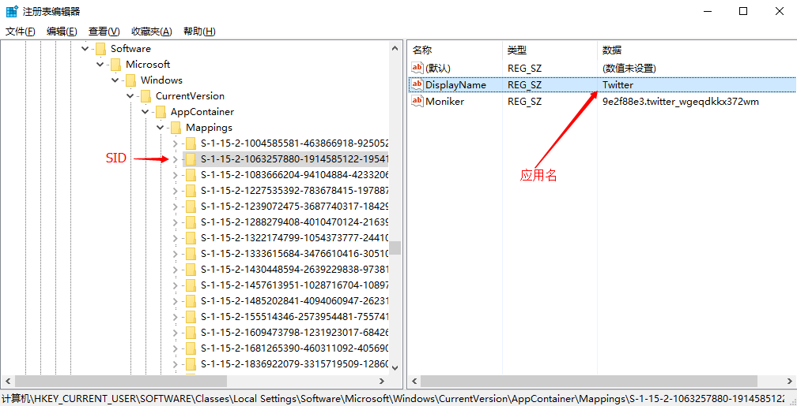
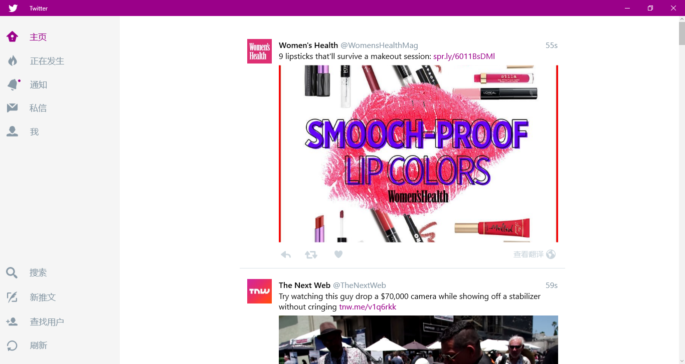

Windows 8/10 的应用是不允许访问 localhost(127.0.0.1)，所以你配置了 Shadowsocks 代理，Windows 10 应用也无法翻墙， 因为Shadowsocks 的代理地址正好是 localhost(127.0.0.1)。这个时候我们就需要祭出 Windows 10 自带的程序：CheckNetIsolation。通过这个程序，你可以设置排除哪个应用的限制，使其可以翻墙。
解决方法
寻找应用的 SID：键盘组合键 + R，然后输入
regedit，打开注册表管理器，找到以下注册表项：
HKEY_CURRENT_USER\Software\Classes\Local Settings\Software\Microsoft\Windows\CurrentVersion\AppContainer\Mappings
在其中找到你想要使用代理的应用，DisplayName 就是应用名，左边的项就是 SID。比如我找的是 Twitter。如下图：

【PS： 你可以鼠标放在 SID 上右键->重命名，然后就可以复制整个 SID 了】键盘组合键 + X，然后按 A【命令提示符（管理员）】，打开终端后输入：
1
CheckNetIsolation loopbackexempt -a -p=SID # 上一步你复制的 SID
回车后就大功告成了。
打开 Twitter 试一下

CheckNetIsolation 参数
- CheckNetIsolation.exe loopbackexempt -a -p=SID 添加指定程序到列表
- CheckNetIsolation.exe loopbackexempt -d -p=SID 从列表删除指定程序
- CheckNetIsolation.exe loopbackexempt -s 列出环回免除的应用列表
注意
有些小伙伴可能会使用 WindowsModernAppsTools 来使 Windows 10 应用翻墙，这个软件也是使用了 CheckNetIsolation，另外最好不要随便动 Windows 10 应用的数据，说不定不小心删除了什么就导致应用崩溃了，切记切记。前车之鉴请参考：
Facebook 的 Windows 10 应用没法翻墙。我找了很多资料，大家的讨论也是只有 Facebook 没法翻墙，其他的都可以。有知道原因并能解决的小伙伴欢迎 骚扰我 或者在下面留言 (●’◡’●)
- 即使都是 Twitter 应用，但是不同的电脑 SID 可能不同。
参考&感谢
文章标题：Windows 10 Metro 应用使用本地 Shadowsocks 代理
文章作者：cylong
文章链接：http://www.cylong.com/blog/2016/06/07/windows-10-metro-shadowsocks/
有问题或者建议欢迎在下方评论。欢迎转载、引用，但希望标明出处，感激不尽(●’◡’●)